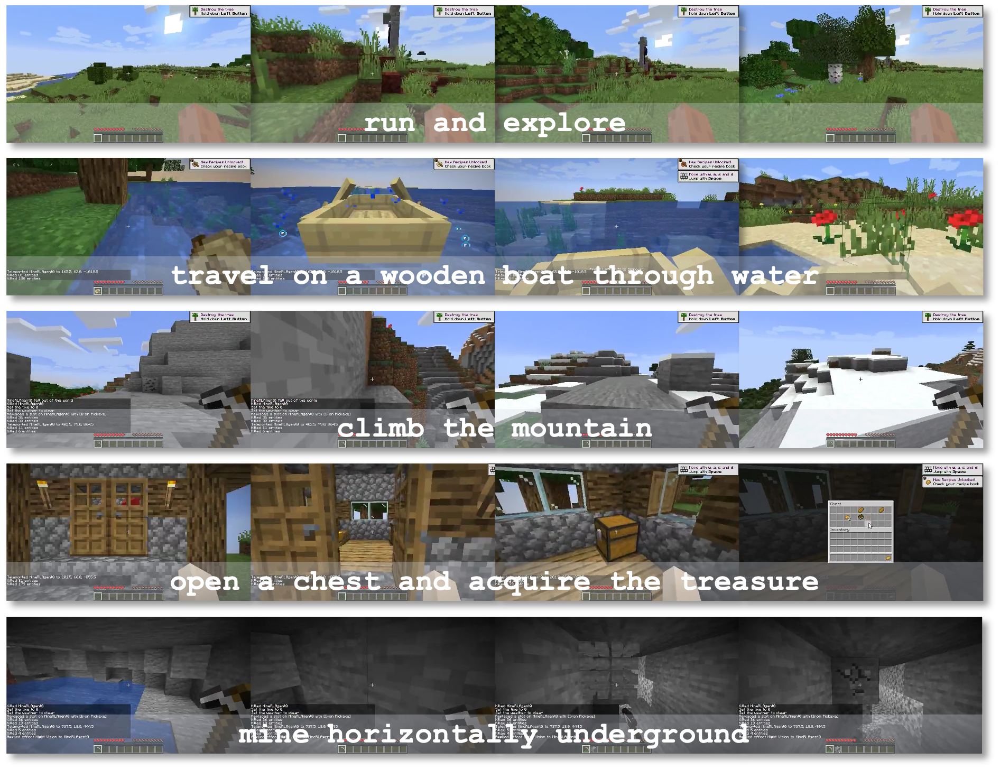

Experimental Results
Results on Minecraft SkillForge benchmark.
Left: Tournament evaluation of GROOT assessed by human players. GROOT performs better than state-of-the-art Minecraft agent STEVE-1. A 150-score gap corresponds to a 70% probability of winning.
Middle: Winning rate of GROOT v.s. other agents on specific task categories. Colors from red to blue denote a decrease in the winning rate. Apart from the human player, GROOT surpasses all other baselines.
Right: Success rate on 9 representative tasks. GROOT champions process-oriented tasks,such as dig three down and fill one up and build snow golems.
t-SNE visualization of the goal space.
Each color corresponds to a specific video category.
Left: Space of randomly initialized video encoder. All the videos are entangled together.
Middle: Space of GROOT trained with self-supervised learning. The videos are clustered based on their semantics.
Right: Synthesized videos using concatenation manner. The concatenated videos lay on the position between the source videos.
Results on solving challenging obtain diamond task.
The vertical dashed lines represent the time when a certain item is first obtained.
Left: GROOT first dig down to the depth of 12 and then mine horizontally to obtain diamonds with an average success rate of 16%.
Right: STEVE-1 quickly dig down to the specific depth but struggle to maintain its height.
Minecraft SkillForge Benchmark
In order to comprehensively evaluate the mastery of tasks by agents in Minecraft, we created a diverse benchmark called Minecraft SkillForge. It covers 30 tasks from 6 major categories of representative skills in Minecraft, including collect, explore, craft, tool, survive, and build.

Examples of tasks in explore category.

Examples of tasks in tool category.

Examples of tasks in survive category.

Examples of tasks in build category.

Examples of tasks in collect category.
Examples of tasks in craft category.
The CraftJarvis Series

Describe, Explain, Plan and Select: Interactive Planning
with Large Language Models Enables Open-World Multi-Task Agents
(Team CraftJarvis)
Neurips 2023 | ICML 2023 TEACH Workshop (Best Paper Award)
DEPS is an interactive planning approach based on Large Language Models (LLMs). It helps with better error correction from the feedback during the long-haul planning, while also bringing the sense of proximity via goal Selector, a learnable module that ranks parallel sub-goals based on the estimated steps of completion and improves the original plan accordingly.

MCU: A Task-centric Framework for Open-ended Agent Evaluation in Minecraft
(Team CraftJarvis)
MCU is an open-ended Minecraft agent evaluation framework that can generate infinite tasks and reveal the difficulty of tasks. In MCU, "task" is a structured data object. MCU leverages "atom tasks" as building blocks to compose complex tasks. Each task is measured with six distinct difficulty scores, which offer a multi-dimensional assessment of a task from different angles. We also maintain a unified benchmark, namely SkillForge, which comprises representative tasks under MCU framework. Researchers can filter specific tasks with certain properties or attributes from SkillForge to test their agent.
Open-World Multi-Task Control Through
Goal-Aware Representation Learning and Adaptive Horizon Prediction
(Team CraftJarvis)
CVPR 2023
This paper studies the problem of learning goal-conditioned policies in Minecraft. It first identify two main challenges of learning such policies and then propose to combine a goal-sensitive backbone and an adaptive horizon prediction module to tackle these challenges.
BibTeX
@misc{cai2023groot,
title={GROOT: Learning to Follow Instructions by Watching Gameplay Videos},
author={Shaofei Cai and Bowei Zhang and Zihao Wang and Xiaojian Ma and Anji Liu and Yitao Liang},
year={2023},
eprint={2310.08235},
archivePrefix={arXiv},
primaryClass={cs.AI}
}